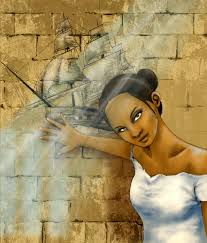
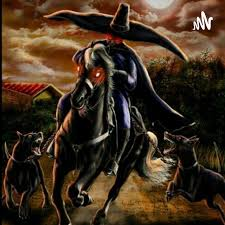
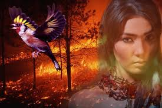
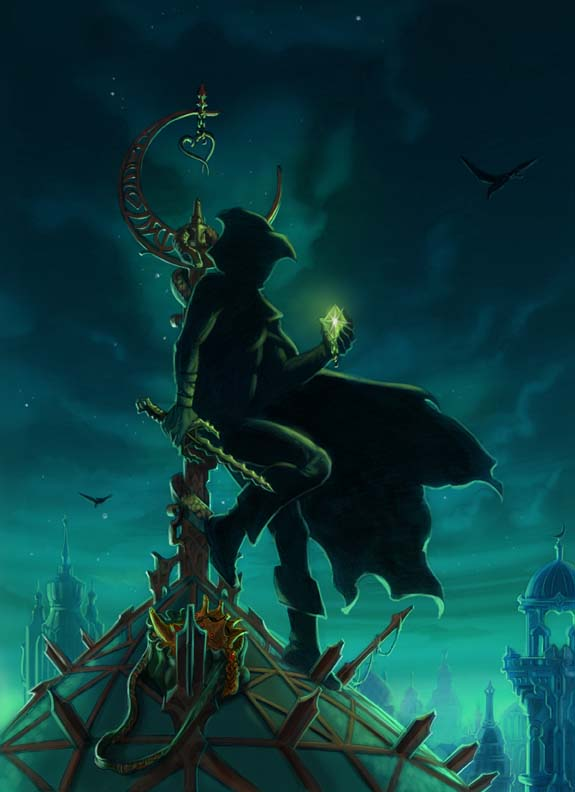
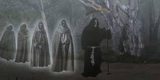

Tradición Oral Guatemalteca
Guatemala es un país con una riqueza cultural inmensa, donde las leyendas se mezclaron con las historias de la época colonial, manteniendo vivo el misterio.

LA TATUANA
GUATEMALA
La mujer acusada de brujería que escapó de su celda navegando en un barco dibujado con carbón.

EL SOMBRERÓN
GUATEMALA
Un hombre bajito de gran sombrero que enamora a mujeres de pelo largo con serenatas.

EL JILGUERILLO
GUATEMALA
La joven que prefirió convertirse en ave antes que casarse con un guerrero por obligación.

PIE DE LANA
GUATEMALA
El personaje que robaba a los ricos para ayudar a los pobres con sus silenciosos pasos.

PENITENTES
GUATEMALA
Una procesión de ánimas con capuchas blancas que recorre las calles en total silencio.